from pythtb import *
from pylab import *
lat=[[1.0]]
sites=[[0.0],[0.5]]
# We vary the intra-cell hopping t2 and set the inter-cell hopping t1
t1 = 1
Nt=500
T2 = linspace(0,2,Nt)
SSH_model=[]
for t2 in T2:
SSH=tb_model(1,1,lat,sites)
SSH.set_hop(t1,1,0,[1])
SSH.set_hop(t2,0,1,[0])
SSH.set_onsite([0,0])
SSH_model.append(SSH)
SSH_model[1].visualize(0)2 SSH model
This code aims to gain an understanding of topological phases of matter and their characterization through the SSH model. To achieve this, we calculate three relevant quantities: the Inverse Ratio Participation (IPR), the entanglement entropy, and Zak’s phase.
The Su-Schrieffer-Heeger model was devised by Wu-Pei Su, John Robert Schrieffer, and Alan J. Heeger in 1979 to describe a polyacetylene polymer chain when doped (Su, Schrieffer, and Heeger (1979)). The structural diagram of polyacetylene consists of a chain of carbon atoms with two kinds of bonds. This can be described using a tight-binding Hamiltonian of a chain of sites with alternating hoppings between neighbors.
We begin by defining the SSH model using the Python library PythTB, where we vary the intra-cell hopping \(t_2\) and set the inter-cell hopping \(t_1=1\).
Now we calculate the SSH band structure for different values of \(t_2/t_1\) over the first Brillouin zone.
%%capture
Xm = [-0.5]
Xp = [ 0.5]
puntosK = [Xm,[0],Xp]
Ek=[]
for i in range(0,Nt):
kpts, kdist, knode = SSH_model[i].k_path(puntosK,101,report=True)
Ek.append(SSH_model[i].solve_all(kpts,eig_vectors=False))for i in range(0,Nt,50):
plt.plot(kdist,Ek[i].T)
plt.xticks(knode)
plt.title("$t_2/t_1$="+str(T2[i]),fontsize=10)
plt.grid(True)
plt.show()
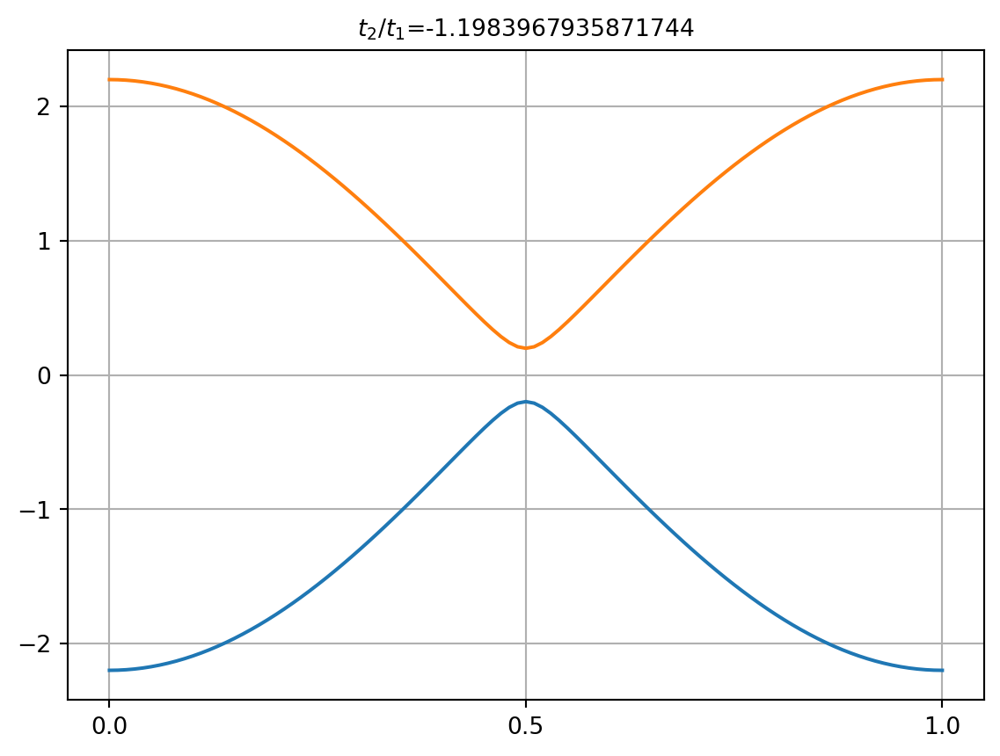


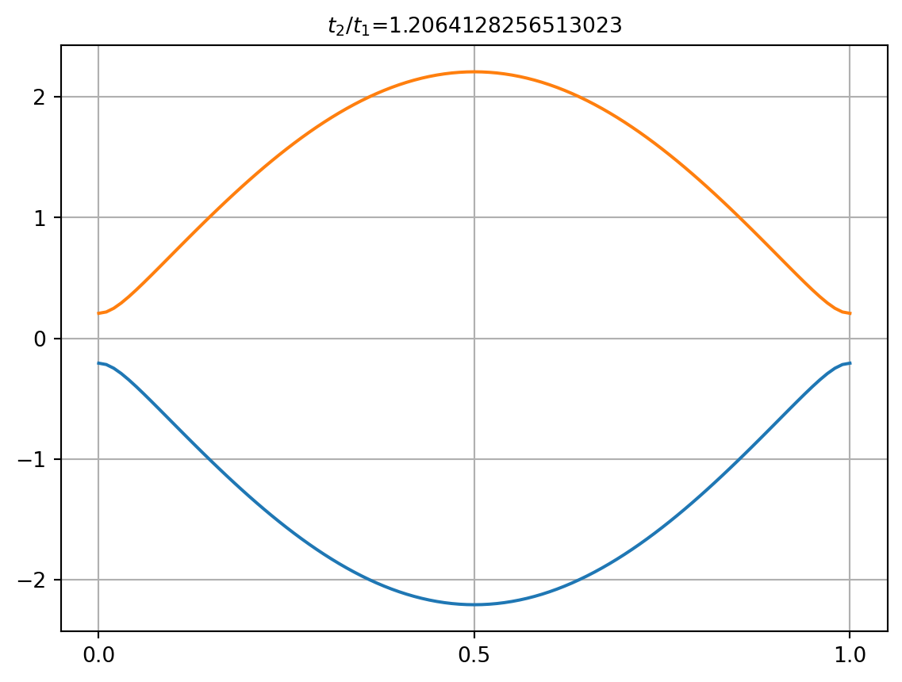


We can easily observe how the band gap closes when \(t_2=t_1\), indicating a phase transition dependent on the ratio \(t_2/t_1\).
2.1 Finite SSH chain
In order to study this fase transition we now consider a finite SSH chain.
NL=50 # Longitud de cadena
SSH_Cortado=[]
for i in range(Nt):
SSH_Cortado.append(SSH_model[i].cut_piece(NL,0,glue_edgs=False))
SSH_Cortado[1].visualize(0)In the next cell, we calculate all the eigenstates of the chain. To study the gap closure, we concentrate our attention on the state whose energy is closest to zero.
evals,evecs,ed=[],[],[]
for i in range(Nt):
Ek,evec = SSH_Cortado[i].solve_all(eig_vectors=True)
evals.append(Ek)
evecs.append(evec)
ed.append(SSH_Cortado[i].get_num_orbitals()//2)
evals=np.array(evals)We now visualize the evolution of the state with energy closest to zero when we vary the ratio \(t_2/t_1\). We can observe that for \(|t_2/t_1|<1\) the state is localized near the edges of the chain and for \(|t_2/t_1|\geq1\) this state is now unlocalized. In other words, for \(|t_2/t_1|<1\) we observe an edge state and for \(|t_2/t_1|\geq1\) it becomes a bulk state.
for i in range(0,Nt,50):
(fig,ax)=SSH_Cortado[i].visualize(0,eig_dr=evecs[i][ed[i],:],draw_hoppings=True)
ax.set_title("$t_2$="+str(T2[i])+"$t_1$"+" E="+str(evals[i][ed[i]]))
ax.set_ylim(-5,5)
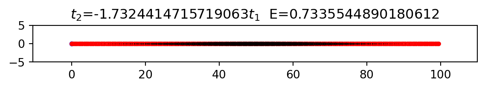

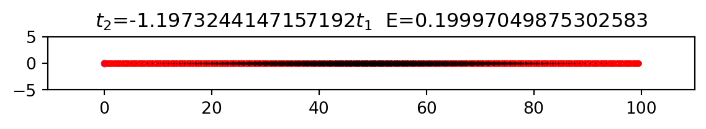
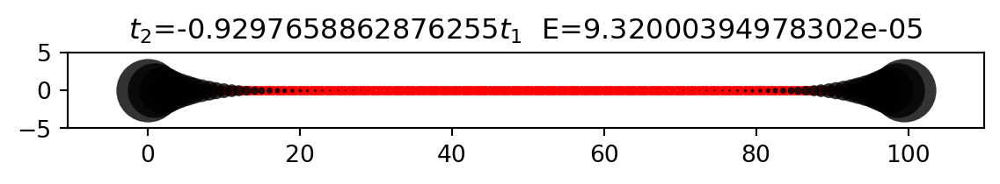
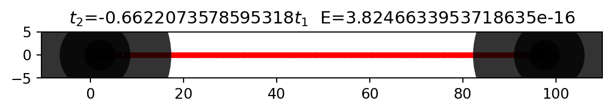
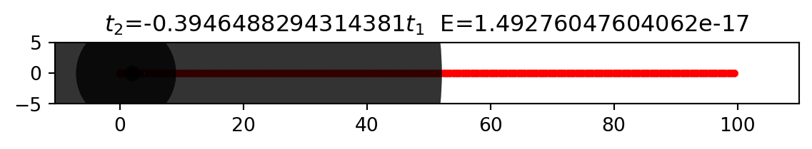
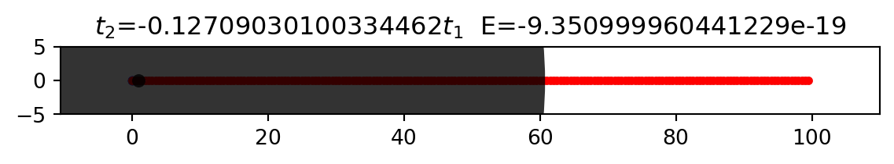
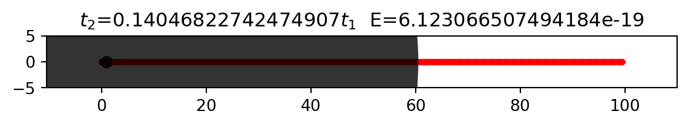
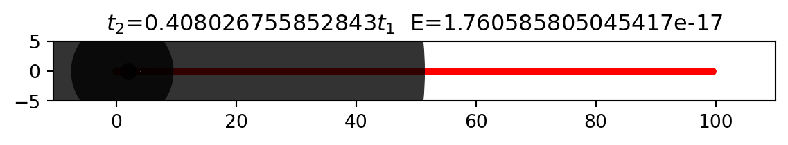
2.2 IPR
We now aim to understand the evolution of all the eigenstates of the chain. To achieve this, we use the Inverse Ratio Participation (IPR) which is defined as \[ \begin{equation} \text{IPR}=\sum_{n=1}^{N} |\psi_n|^4 / \sum_{n=1}^{N} |\psi_n|^2 \label{eq : IPR} \end{equation} \]
where \(\psi_n\) is the amplitude of the wavefunction in the \(n\)-th site of the chain, which has \(N\) sites. Notice that if we asume \(\psi_n\) is normalized, the term in the denominator is equal to 1.
The IPR is a simple way to quantify how many states a particle is distributed over a system. To see this, suppose that the particle is equally distributed over \(M\) sites, i.e., \(|\psi_n|^2=\frac{1}{M}\) for \(n=1,...,M\) and zero otherwise. In that case, \[ \begin{equation} \text{IPR}=\sum_{n=1}^{N} |\psi_n|^4 = \sum_{n=1}^{M} \frac{1}{M^2} = \frac{1}{M}. \label{eq : IPR-example} \end{equation} \]
If we asume that the particle is localized in one state, we see that \(\text{IPR}=1\). In contrast, if we asume that the particle is distributed across every state in the system, then \(\text{IPR}=1/N\), and in the thermodynamic limit, the IPR would tend to zero. A simple exercise of extremation shows that, assuming \(\psi_n\) is normalized, then \[ \begin{equation} \frac{1}{N}\leq \text{IPR}\leq 1 \end{equation} \]
which makes it a good way to measure the localization of a certain state.
In the next cell we calculate the IPR of all the eigenstates of our finite system.
IPR=[]
for i in range(Nt):
IPR.append([])
for edo in evecs[i]:
C2=sum(np.absolute(edo)**2)
C4=sum(np.absolute(edo)**4)
IPR[i].append(C4/C2)We now graph the evolution of the energy levels as a function of \(t_2/t_1\) and color them using the IPR.
def colorFader(c1,c2,mix=0):
c1=np.array(mpl.colors.to_rgb(c1))
c2=np.array(mpl.colors.to_rgb(c2))
return mpl.colors.to_hex((1-mix)*c1 + mix*c2)
def Fader(Lc,mix): # Linear interpolation of colors in Lc
i=int(np.floor(mix*(len(Lc)-1)))
if i==len(Lc)-1:
c1,c2=Lc[-2],Lc[-1]
return c2
else:
c1,c2=Lc[i],Lc[i+1]
return colorFader(c1,c2,mix*(len(Lc)-1)-i)
Lc=['red','Blue']
fig, ax = plt.subplots(figsize=(7, 6))
for i in range(2*NL): # Número de eigenestados
colors = []
for j in range(Nt):
colors.append(Fader(Lc,IPR[j][i]))
ax.scatter(T2,evals.T[i],c=colors,s=0.5)
#ax.set_facecolor("black")
ax.set_xlabel('t2/t1')
ax.set_ylabel('E')
fig, ax = plt.subplots(figsize=(7, 1))
n=500
for x in linspace(0,1,n):
ax.axvline(x, color=Fader(Lc,x), linewidth=4)
ax.set_xlabel('IPR')
ax.tick_params(axis='y', which='both', left=False, labelleft=False)
plt.show()
We observe eigenstates with an IPR close to one and energy close to zero when \(|t_2/t_1|<1\), indicating localized eigenstates with (almost) zero energy. For the remaining eigenstates, we observe an IPR very close to zero, which implies bulk states that we can associate with the Bloch states of the band structures calculated previously. While strictly speaking, in this system, there is no band structure as we have not imposed periodic boundary conditions, considering a long enough chain allows us to approximate the eigenstates of the bulk with the Bloch eigenfunctions of the band structure.
Notice that in the previous example of Eq. \(\ref{eq: IPR-example}\), we made no clear specification of the position of the sites in the system to which the particle was distributed. This means that the IPR cannot tell us if the localized eigenstates are edge states. To address this limitation, we turn to the entanglement entropy.
2.3 Entanglement entropy
Consider two systems \(A\) and \(B\) described by states \(|\phi^A\rangle\) and \(|\phi^B\rangle\) with their respective Hilbert space \(\mathcal{H}_A\) and \(\mathcal{H}_B\). Then, the compound system \(A+B\) is accurately described by the tensor-product \(\mathcal{H}_A\otimes\mathcal{H}_B\) whose basis states are of the form \(|\phi^A\rangle\otimes|\phi^B\rangle\). A state \(|\psi\rangle\) of the compound system is called pure if it can be written as \(|\psi\rangle=|\phi^A\rangle\otimes|\phi^B\rangle\) for some \(\varphi_{A/B}\in\mathcal{H}_{A/B}\). In any other case we call \(|\psi\rangle\) an entangled state. For example \(|\psi\rangle=|\phi^A_1\rangle\otimes|\phi^B_1\rangle+|\phi^A_2\rangle\otimes|\phi^B_2\rangle\) is in general an entangled state.
Consider an entangled state \(|\psi^{AB}\rangle\), we can then expand it as \[ \begin{equation} |\psi^{AB}\rangle=\sum_{j=1}^d c_j |\phi_j^{A}\rangle\otimes |\phi_j^{B}\rangle. \label{eq : AB} \end{equation} \]
Equation \(\ref{eq : AB}\) is called the \(\textit{Schmidt decomposition}\) of \(|\psi^{AB}\rangle\) where \(d\) is, at most, the dimension of the smaller subsystem. If we now wish to study only one of the subsystems, we can no longer describe it using a wave function because \(|\psi^{AB}\rangle\) is not pure. Instead we turn our attention to the density matrix \(\rho_{AB}=|\psi^{AB}\rangle\langle\psi^{AB}|\) and calculate its reduced state on A and B by taking the \(\textit{parcial trace}\) over the subsystem as \[ \rho_A=\text{Tr}_A(\rho_{AB})\equiv\sum_{j=1}^d |c_j|^2 |\phi_j^{A}\rangle\langle\phi_j^{A}|, \] \[ \rho_B=\text{Tr}_B(\rho_{AB})\equiv\sum_{j=1}^d |c_j|^2 |\phi_j^{B}\rangle\langle\phi_j^{B}|. \]
The physical reason why both \(\rho_A\) and \(\rho_B\) use the same probability distribution \(p_j=|c_j|^2\) stems from the fact that when we measure a particle in an entangled state, we colapse it to a state \(|\phi^{A}\rangle\otimes |\phi^{B}\rangle\) with a probability \(|c_j|^2\). This probability sets the state of A and B at the same time, and since this occurs when we measure any observable associated with subsystem A or B, it means that the probability of measuring such a state is the same when the state is entangled. As a corollary, since both \(\rho_A\) and \(\rho_B\) have the same probabilities, they also have the same Von Neumann entropy. This defines the entanglement entropy as \[ S(\rho_B)=S(\rho_A)=-\text{Tr}\rho_A\ln\rho_A=-\sum_{i} p_i \ln p_i. \]
In their paper (Ryu and Hatsugai (2006)) S.Ryu and Y.Hatsugai proposed that the entanglement entropy could be used to characterize edge states and, as a consequence, topological phases. They also propose a novel way to calculate it, by means of a \(C\) Hamiltonian which, for a bipartite system with chiral symmetry is defined as the restriction of the density matrix of the Fermi sea to a subsystem A.
In detail, we first calculate the eigenstates \(\psi_\ell\) with energy \(\epsilon_\ell<0\), we then calculate the density matrix of the Fermi sea as, \[ P = \sum_{\epsilon_\ell<0} \psi_\ell \psi_\ell^{\dagger}, \]
and finaly we calculate the restriction of the P matrix to a subsystem. Notice that we have the liberty of defining the subsystems when we “cut” the density matrix: \[ P=\begin{pmatrix} C & \ast \\ \ast & \ast \end{pmatrix} \]
In the next cell we calculate the eigenvalues of the \(C\) Hamiltonian for the SSH chain, in this case we define the subsystems as both halfs of the chain when we cut it right through the middle.
def C_Spectre(model):
Ek,evec=model.solve_all(eig_vectors=True)
nF=model.get_num_orbitals()//2 # 2 level system
P=np.sum([evec[l][:,None]*np.conjugate(evec[l]) for l in range(nF)],0)
C=P[0:nF,0:nF]
ζ=list(sort(np.linalg.eigvals(C)))
return ζ
ζ=np.array(list(map(C_Spectre,SSH_Cortado)))fig, ax = plt.subplots(figsize=(7, 6))
for L in ζ.T:
ax.scatter(T2,L,s=1,c='black')
ax.set_ylim(-0.1,1.1)
ax.set_xlabel('$t_2/t_1$')
ax.set_ylabel('Spectre of $C$')
ax.grid(True)c:\Users\gozu0\Topological_Superconductors\.conda\Lib\site-packages\matplotlib\cbook.py:1699: ComplexWarning: Casting complex values to real discards the imaginary part
return math.isfinite(val)
c:\Users\gozu0\Topological_Superconductors\.conda\Lib\site-packages\matplotlib\collections.py:194: ComplexWarning: Casting complex values to real discards the imaginary part
offsets = np.asanyarray(offsets, float)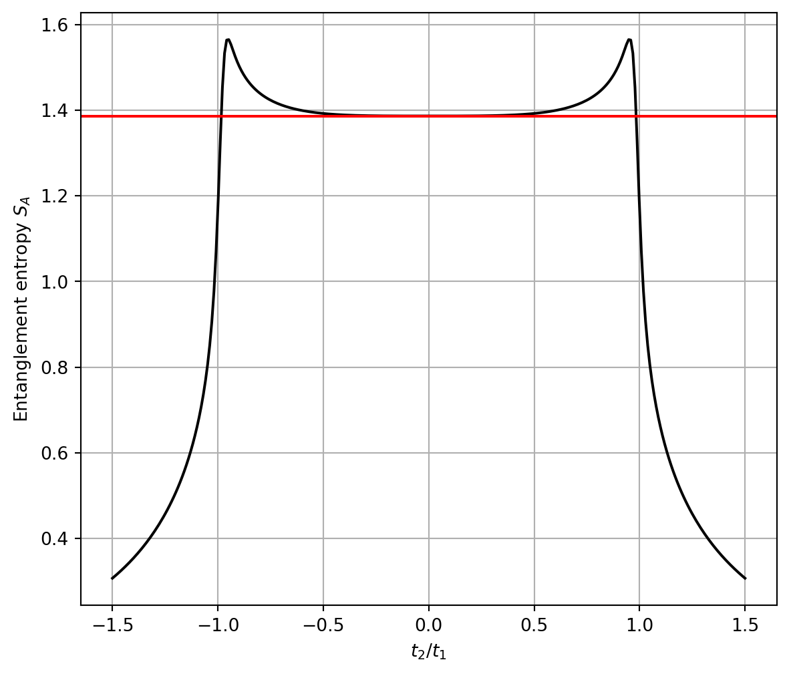
Now, from its definition, \(P\) has only two eigenvalues, namely 0 and 1. The eigenvectors with eigenvalue 1 span the Fermi sea and hence offer
Since \(C\) has, approximately, the same eigenvectors as \(P\)
If we then compute the eigenvalues of \(C\), we can calculate the entanglement entropy as \[ S_A=-\sum_{\ell} \zeta_\ell \ln\zeta_\ell + (1-\zeta_\ell)\ln(1-\zeta_\ell), \]
where \(\{\zeta_\ell\}\) are the eigenvalues of \(C\).
In this example we take advantge of the sublattice symettry of the SSH chain to calculate \(S_A\) in an equivalent form as \[ S_A=-2\sum_{\zeta_\ell\geq0.5} (\zeta_\ell \log(\zeta_\ell) + (1-\zeta_\ell)\log(1-\zeta_\ell)). \]
def EEntropy(model):
Ek,evec=model.solve_all(eig_vectors=True)
nF=model.get_num_orbitals()//2 # Number of states on the Fermi sea
P=np.sum([evec[l][:,None]*np.conjugate(evec[l]) for l in range(nF)],0)
C=P[0:nF,0:nF]
ζ=sort(np.linalg.eigvals(C))[nF//2:nF] # Here we use chiral simmetry
ζ=np.array([z for z in ζ if(z!=0 and z!=1)]) # We remove the eigenvalues that dont contribute
SEE=-sum((1-ζ)*np.log(1-ζ)+ζ*np.log(ζ))
return 2*SEE
See=list(map(EEntropy,SSH_Cortado))fig, ax = plt.subplots(figsize=(7, 6))
ax.plot(T2,See,c='black')
ax.set_xlabel('$t_2/t_1$')
ax.axhline(2*np.log(2),c='red')
ax.set_ylabel('Entanglement entropy $S_A$')
ax.grid(True)c:\Users\gozu0\Topological_Superconductors\.conda\Lib\site-packages\matplotlib\cbook.py:1345: ComplexWarning: Casting complex values to real discards the imaginary part
return np.asarray(x, float)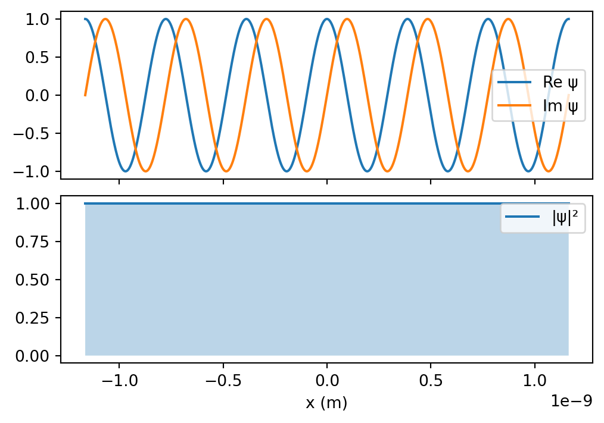
According to Ryu and Hatsugai, the entanglement entropy in the thermodynamic limit is greater or equal to \(\log 2\) times the number of edges of the system. In this case we can see that \(S_A\) goes under this inferior limit \(2\ln 2\) around \(t_2=\pm t_1\) which means that the two edge states disapear in this limit.
2.4 Zak’s phase
In order to say that this is a topological phase transition we must asociate each phase with a \(\textit{topological invariant}\). A prime example of a topological invariant is the also called the which is a quantity that describes how a global phase accumulates as some state \(|\psi\rangle\) is carried around a closed loop in a complex space. For example, if we consider a loop of states \(\{|\psi_0\rangle, |\psi_1\rangle , \dots , |\psi_N\rangle\}\) where we set \(|\psi_0\rangle=|\psi_N\rangle\). The Berry phase for this discrete loop is defined as \[ \phi=-\arg( \langle\psi_0|\psi_1\rangle \langle\psi_1|\psi_2\rangle \cdots \langle\psi_{N-1}|\psi_0\rangle ). \]
It can be easily seen that \(\phi\) is a gauge invariant to the transformation \(|\psi_n\rangle\rightarrow e^{i \alpha_n} |\psi_n\rangle\) because the ket \(|\psi_n\rangle\) will cancel the phase \(e^{i \alpha_n}\) carried by the bra \(\langle \psi_n |\).
The Berry phase has a generalization for a continuous loop of states \(\{ |\psi_\lambda\rangle ; \:\:\lambda\in[0,1] \}\) : \[ \phi=\oint \langle u_\lambda| i\partial_\lambda u_\lambda\rangle \text{d}\lambda \]
A proof of this expression can be found in Vanderbilt (2018).
Here we will calculate Zak’s phase, which is defined as the Berry phase where \(\mathcal{C}\) is the Brillouin Zone, which means \[ \gamma=\int_{-\pi}^{\pi} \langle u_k^n| i \partial_k |u_k^n\rangle \text{d} k, \]
where \(u_k^n\) is the amplitude of the Bloch wavefunction with crystaline momentum \(k\) associated with the \(n\)-th band.
def HamSSH(t1,t2): # We define the SSH hamiltonian in k space
def H(k):
H = np.array([[ 0, t1+t2*exp(-1J*k)],
[t1+t2*exp(1J*k), 0]])
return H
return H
def Zak(H): # Given the hamiltonian in k space, calculates the zak phase
kpath = np.linspace(-pi,pi,100,endpoint=False)
Ek,vk = eig(H(kpath[-1]))
uN = vk.T[Ek<0]
Ek,vk = eig(H(kpath[0]))
u0 = vk.T[Ek<0]
Prod = np.vdot(uN,u0)
un1 = u0
for k in kpath[1:]:
Ek,vk = eig(H(k))
un = vk.T[Ek<0]
Prod = Prod*np.vdot(un1,un)
un1 = un
ϕ = -imag( log(Prod) )
if(ϕ<-10**(-10)): ϕ=ϕ+2*np.pi # We use the log branch [0,2*pi) with 10 digits of resolution
return ϕ
t2_path=np.linspace(-2,2,500)
Lzak=[Zak(HamSSH(1,t2)) for t2 in t2_path]
fig, ax = plt.subplots(figsize=(7, 6))
ax.plot(t2_path,Lzak,c='green')
ax.set_xlabel('$t_2/t_1$')
ax.set_ylabel('Zak phase')
ax.grid(True)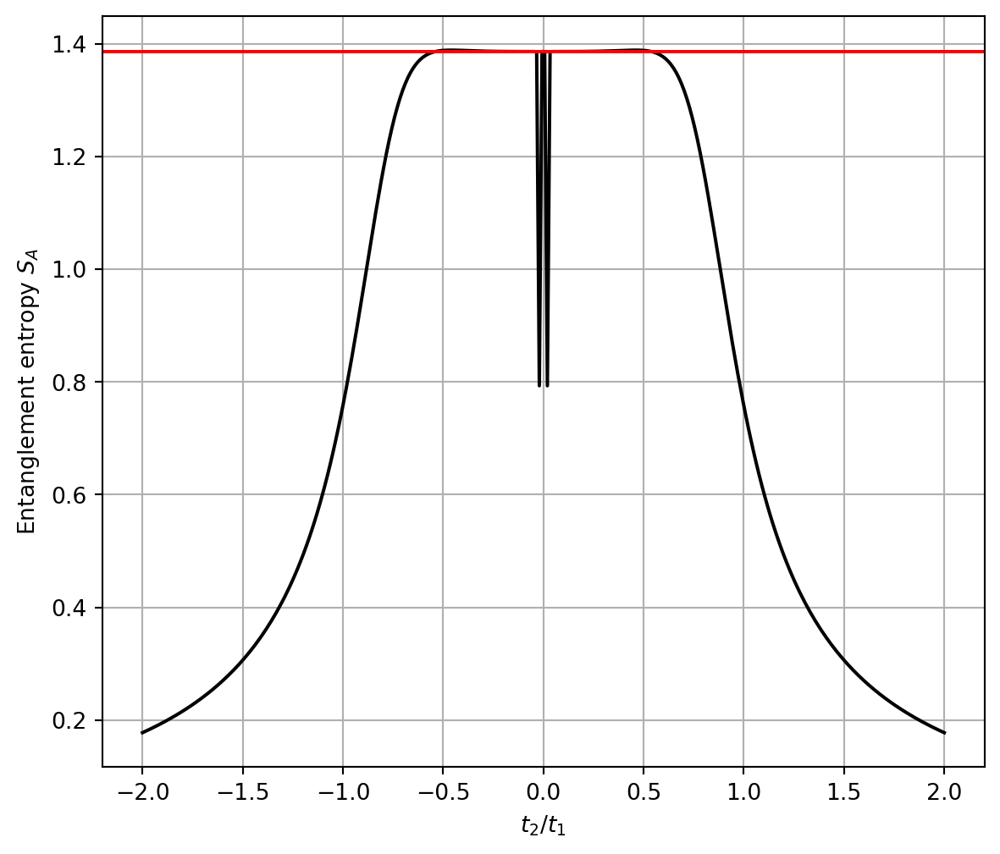